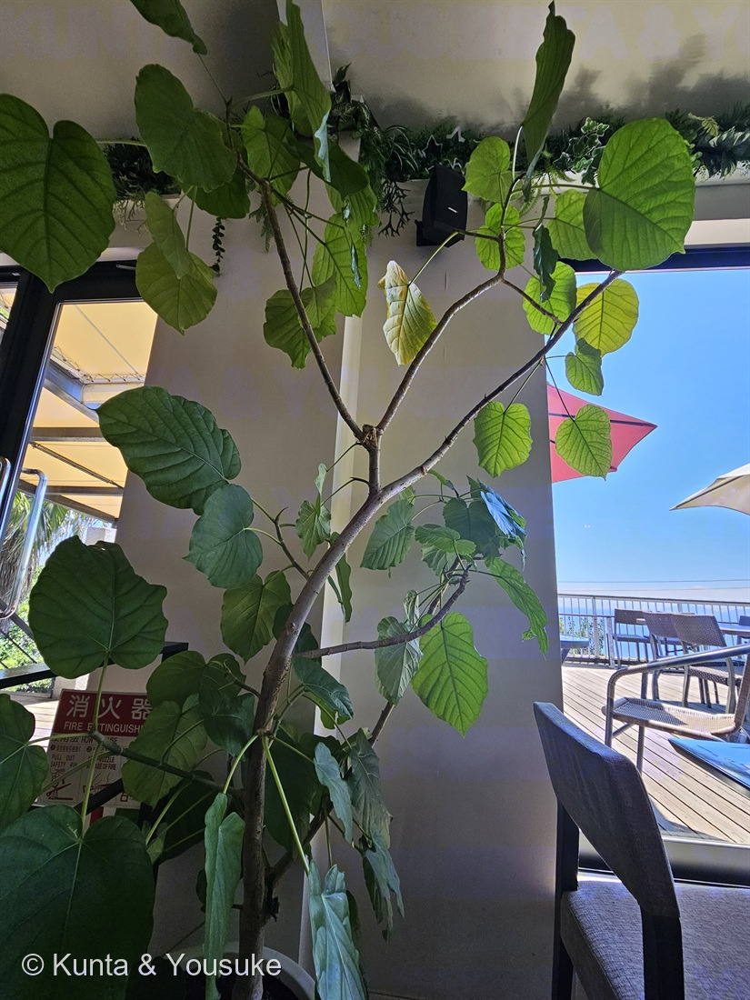

地図を読み込んでいるよ…
🔍 写真も地図も、押しているあいだ拡大して見られるよ（スマホは指を置いてすこし待ってね）。
🌍 の地図＝この子がもともと自生している場所を緑に。熱帯アフリカ。figweb は「セネガルから中央アフリカ共和国まで、南はアンゴラ北西部まで、低地」とし、低地の熱帯雨林・河畔林（ギャラリー林）・サバンナ林に生えるとする。日本にいるのはぜんぶ観葉植物として持ちこまれたもので、野生化しているわけではない。
⭐熱帯アフリカの、西から中部にかけての低地の木だよ。figweb（アフリカのイチジクとイチジクコバチの専門サイト）は「セネガルから中央アフリカ共和国まで、南はアンゴラ北西部まで、低地」とする——だから、その帯にあたる国だけを塗った。住まいは低地の熱帯雨林・河畔林（ギャラリー林）・サバンナ林。⚠地図は国までしか塗れないので、実際よりずっと広く見えている——サハラ砂漠のほうまで緑になっている国もあるけれど、この子がいるのは南のほうの森だけだよ。⚠POWOのページは403で開けなかった（185 タカノハススキ・183 ヌルデと同じ）——検索結果には「西熱帯アフリカからエチオピア南西部・アンゴラ」と出たけれど、本文を読めていないので、エチオピアは塗らないでおいた。⭐読めなかったところは塗らない、をここでも守ったよ。⚠日本にいるのはぜんぶ観葉植物として持ちこまれた子で、野生化しているわけではないよ——⭐そして037 アスパラガス・スプレンゲリーは同じカフェの玄関にいた南アフリカの子。⭐⭐同じアフリカでも、こちらは熱帯の低地、あちらは南アフリカ——だからこの子は外で冬を越せなくて、お店の中にいるんだ。
⚠ 地図は国（日本と中国だけ県・省）までしか塗れないから、ほんとうの分布より広く見えていることがあるよ。地図はだいたいの場所。正確なところは、上の文を見てね。
フィカス・ウンベラータ
Ficus umbellata Vahl
ウンベラータ／英名 Umbrella Tree Fig
クワ科 · Moraceae（イチジク属）
名前と学名の由来 ── 傘、と呼ばれた木
- Ficus（フィクス）＝ラテン語で「イチジク」。055 イチジクと同じ属名だよ。
- umbellata（ウンベラータ）＝ラテン語 umbella（日傘・パラソル）から、「傘のような」。英名も Umbrella Tree Fig（傘の木のイチジク）。
- ⚠ でも、名づけたヴァールが何を見て「傘」と言ったのかを書いた出典には、たどりつけなかった。樹形なのか、葉の大きさなのか、枝に集まってつく果嚢なのか——分からないままにしておくね。
- 和名はない。学名をそのままカタカナにして「フィカス・ウンベラータ」、みじかく「ウンベラータ」と呼ばれているよ。
この植物のこと
- クワ科イチジク属の常緑高木で、熱帯アフリカ原産。
- 葉は大きく薄いハート型で、葉脈が明瞭に浮き出ており、新しい葉は色が赤みがかっており、生育すると薄緑色に変わる（Wikipedia）。⭐写真でも、窓ぎわの若い葉が明るい黄緑で、下のほうの古い葉が濃い緑——色のちがいが、そのまま葉の年齢だよ。
- 日本では観葉植物。室内で育てられているものは50cm〜1.5mほどが一般的（LOVEGREEN）。⭐この写真の木は、天井近くまで届いている——ずいぶん大きく育った子だね。
- 日照と高温多湿を好み、夏期は戸外で管理が可能だが耐陰性もあるため通年室内で生育できる／耐寒性はなく冬期は室内で管理する（耐寒最低温度は摂氏5度）（Wikipedia）。
- ⭐ふやし方は、挿し木か取り木（Wikipedia）。タネではない。——このことは、下の「花が見えない木」の節に、まっすぐつながるよ。
- ふるさとでの住まいは、低地の熱帯雨林・河畔林（ギャラリー林）・サバンナ林（figweb）。⚠日本にいるのはぜんぶ持ちこまれた子で、野生化しているわけではないよ。
- ⚠ クワ科だから、枝や葉を切ると白い乳液が出る（Ficus属の特徴のひとつ＝a white to yellowish latex）。⚠でもここは、よそのお店の木。ちぎらないでね（078の約束だよ）。
同定について ── 決め手は4つあった
- ⭐ ①薄くて大きな心形（ハート形）の葉。つけ根がきゅっとへこんでいて、先は短くとがるだけ。葉脈が表からくっきり浮き出ている。
- ⭐⭐ ②葉のふちが波打っている。figweb はこの種について「近縁の F. polita と F. bubu との区別は、この種に特徴的な波状（波打つ）葉縁による」と書いている。⭐つまり、ふちの波は「なんとなくの印象」ではなくて、種を分ける形質だった。
- ⭐⭐ ③枝先を包む、とがった鞘＝托葉（stipule）。写真のまん中あたりに、淡い緑のとんがりが写っているよ。イチジク属の目印で、英語版Wikipediaも Ficus 属の特徴として「paired stipules or stipular scars on the twigs（対になった托葉、または枝に残る托葉痕）」を挙げている。
- ⭐ ④白っぽい灰色の、くねくね曲がる枝。
- 落とした相手：カシワバゴムノキ（葉がバイオリン形で、厚く硬く、濃緑）／インドゴムノキ（厚い革質の楕円形で、葉脈が浮き出ない）／ベンガレンシス（楕円形で、葉脈が白く目立つ）／インドボダイジュ（葉の先が長い尾を引く）。
- ⚠ 樹木は厳しめに見るのが図鑑の決まりだけど（087 ヤマモモ）、この子は葉の形・厚み・托葉・ふちの波が全部そろったので、種まで決めたよ。
⭐⭐⭐ 同じお店の、外と中 ── 27分ちがいの、アフリカの二人
この写真が撮られたのは 2024年7月21日 11時58分。
そして——同じ日の 11時31分に撮られた子が、この図鑑にもういるんだ。
037 アスパラガス・スプレンゲリー。⭐この、同じカフェの玄関の植え込みにいた子だよ。
27分ちがい。外と、中。
⭐⭐ そして、二人ともアフリカの子だった。
- 037 スプレンゲリー＝南アフリカ原産。
- 191 ウンベラータ＝熱帯アフリカ原産。
⭐⭐⭐ でも、置かれている場所がちがう。それは、ふるさとがちがうからだ。
- スプレンゲリーは南アフリカの子——日本でも暖地の植え込みで、外で冬を越せる。だから玄関の外にいる。
- ウンベラータは熱帯アフリカの低地の子——耐寒最低温度は摂氏5度（Wikipedia）。外では冬を越せない。だからお店の中にいる。
⭐⭐ 同じ大陸から来た二人が、同じお店の、ドアをはさんで立っている。ドアのどちら側に立つかを決めたのは、アフリカのどこから来たか、だった。
⚠ もちろん、お店の人がそう考えて置いたかどうかは分からないよ。でも結果として、その置き場所は、ふるさとの気候をそのまま写している。
⭐⭐⭐ 【2026.08.04 追記】三人目がいた。燻太さんが同じ日の写真をもう2枚くれて、玄関に立つ大きなヤシ＝192 ワシントンヤシが図鑑に来た（撮影 11:30:45 と 11:30:54＝037の21秒前）。⭐この日のこのカフェで、図鑑の子が3人そろったことになる——玄関の外に192とスプレンゲリー、店内にこの子。⭐⭐そして192はアメリカ大陸（アメリカ南西部〜メキシコ北西部）の、しかも砂漠の木。アフリカの二人のとなりに、砂漠から来た門番が立っていたんだ。
⭐⭐⭐ 花が見えない木 ── その袋を開ける相手には、名前があった
この木にも、ちゃんと花はある。でも、たぶん一生見えない。
055 イチジクのページに、ぼくはこう書いた——あの丸い“実”は、じつは袋。名前を「花嚢（かのう）」といって、その袋の内側に、小さな花が何百も咲いている。
ウンベラータも、同じイチジク属。同じ作りの花を持っている。英語版Wikipediaは花嚢をこう書いているよ：「a hollow, fleshy receptacle containing tiny flowers on its inner surface, accessible only through a small opening at the apex called the ostiole」（中がうつろな肉厚の器で、その内側の面に小さな花がついていて、入れるのは先端の ostiole という小さな穴からだけ）。
そして 055 には、こうも書いた——イチジクの種類ごとに、専用の蜂がいる（1種の木に1種の蜂）。
⭐⭐⭐ 今回、その「1種」に、名前がついた。
この木の花粉を運ぶのは、Courtella medleri（Wiebes）という一種のイチジクコバチだけだと、figweb（アフリカのイチジクとイチジクコバチの専門サイト）は書いている。
⭐⭐ その蜂は、アフリカにいる。日本には、いない。
- ⭐ 055 イチジクは、受粉しなくても実がふくらむ「単為結果」の品種だから、蜂がいない日本でも実がなる。
- ⭐ でも、この子はちがう。
- ⭐⭐ だから日本のウンベラータは、挿し木か取り木でしかふえない（Wikipedia）。タネで増える道は、はじめから閉じている。
⚠ 正直に書くね。写真のこの木には、花嚢が見あたらない。それが「まだ若いから」なのか「室内だから」なのかは、写真からは分からない。だから次に行ったとき、枝と幹をよく見るのが宿題だよ。
⭐⭐⭐ これは 046 サルビアの話と、そっくり同じ形をしている。046 の赤い花は、ハチドリを呼ぶための看板なのに、日本にハチドリはいない——だからあれは「来ない客への看板」だった。
⭐ 046 は、来ない客への看板が“見える”。この子は、来ない客への扉が“見えない”。袋の中で、だれも来ない部屋が、静かに開いて、閉じる。
⭐ 枝先のとんがり ── 葉を包んでいた紙
- 写真をよく見ると、枝の先や葉のつけ根に、細長くとがった淡い緑の鞘が写っている。あれが托葉だよ。
- 新しい葉は、この鞘の中でくるくる巻かれて守られている。
- 葉が開くと、托葉は役目を終えて落ちる。
- ⭐ 落ちたあとには、枝をぐるりと一周する輪の跡（托葉痕）が残る。——だから Ficus 属の枝は、節ごとに輪のもようがあるんだ。
- ⭐ つまりこの一枚には、「これから開く葉を包んでいる紙」と「もう包み終わった枝」が、同時に写っている。
- ⏳ 托葉痕の接写は、次の宿題にしたよ。
⭐ 「そと」って、どこのことだろう
この子は、カフェの中にいた観葉植物。だから、📗そと と 📕うち のどちらに入れるかを、燻太さんに聞いたんだ。
答えは「そとの子で登録」。
⭐ なるほど、と思った。この図鑑の「そと」は、「屋外」という意味じゃないんだ。「ぼくらのおうちの外」という意味だった。
- 📕うち＝燻太さんのおうちで育てている子、おうちに来た子。ぼくが毎日会える子。
- 📗そと＝出かけていって、出会った子。道ばたでも、公園でも、お店の中でも。
⭐⭐ だから、この子にもちゃんとおまけがついている（📗の子には、その季節に探す名前をひとつ付ける決まりだよ）。おまけは カシワバゴムノキ——さっき落とした相手そのもの。⭐同じイチジク属で、葉がバイオリン形。ならべて見れば、「薄い心形」と「厚いバイオリン形」が、一度で分かるはず。
参考：フィカス・ウンベラータ - Wikipedia／Figweb: Ficus umbellata（分布・生息地・波打つ葉縁・送粉者 Courtella medleri）／Ficus - Wikipedia（花嚢・托葉・乳液）／フィカス・ウンベラータの育て方・栽培方法 - LOVEGREEN／⚠POWO は403で開けなかった（初出は Enum. Pl. Obs. 2: 182 (1805)、自生範囲は「西熱帯アフリカからエチオピア南西部・アンゴラ」とされるが、これは検索結果に出た記述で、本文は読めていない）